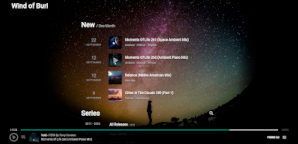

// Open Source Projects
Most of my OSS development goes around one top-level project: other projects were created to fulfill main
project needs (including environment
needs). Nevertheless, I'm trying to do all projects in a generic way, so each one could be used
independently. If my projects make your life easier,
you can support its development.
- Dropwizard-guicey
- Google guice integration for dropwizard with additional integration modules. An attempt to get
dropwizard
closer to spring-boot (considering guice ideology differences).
# General Java
- Generics resolver
- Java generics resolution at runtime. Initially was writtem for
guice-persist-orient to support its dao layer (similar to spring-data). Now it is used in guicey for
configuration class introspection (to support direct values injection).
- Yaml config updater
- CLI tool (with native binaries) for yaml files merging, preserving comments and white spaces. Contains
dropwizard
integration module (for dropwizard config updates)
- Spock-junit5
- JUnit 5 extensions support for spockframework 2. So any existing junit 5 extension could be
used in spock 2.
Avoids need to maintain different testing libraries for junit and spock.
# Guice
- Guice ext annotations
- Adds support for JSR-250 (@PostContruct and @PreDestroy) annotations. Provides class generator module to
allow
using abstract classes as guice beans (all calls must be handled with AOP). Initially was developed for
guice-persist-orient to power its spring-data
like repositories.
Now used in guicey JDBI
module (for interface repositories)
- Guice validator
- Runtime validation for guice bean method parameters and return value, annotated with
javax(jakarta).validation annotations
(e.g. hibernate-validator). With this module, it would be
enough
to put, for example, @NotNull annotation on method parameters to dynamically check values for nullness
during method call.
# Music
- Wind Of Buri player
- Ideal music for work (especially coding). I did this site to have a structured search
for this wonderful music and easily find related albums. Site was developed with angular-dart
(with bulma) and being completely static (no backend).
Music played directly from promodj site, where "wind of
buri" publish its music

# Gradle plugins
- Quality plugin
- Static analysis tools (PMD, checkstyle, spotbugs, codenarc) gradle integration. The main goal of this
plugin
is to print all detected violations directly into console, which greatly improves static tools usage
comfort.
- Java lib plugin
- Java (and groovy) projects configuration boilerplate. Makes gradle more "maven" (in sense of simplicity,
some
behaviours and for multi-module projects).
- Pom plugin
- Plugin simplifies maven-publish plugin usage and corrects generated POM to behave more like "maven":
for example, more logically map gradle configurations into maven scopes. Fixes java-platform plugin
behaviour for BOMs. Allow to vanish used BOMs from generated POM (to simplify dependencies
resolution for projects, using this POM)
- Github info
plugin
- Removes github-related configuration boilerplate: most links in the generated POM could be easily
generated
with github user name (these links required for maven central publication).
- Mkdocs plugin
- Generates multi-version project documentation with python mkdocs
tool
(see example). Mkdocs is very easy to use with
gorgeous result.
Even asciidoctor-based antora
is not as great (antora use nodejs)
- Python plugin
- General python support for gradle project. Plugin requires only global python installation (or could use
docker
container with python) and, using it, could run python scrips or modules directly from gradle.
Project-specific pip
dependencies management is also implemented. Plugin was developed for mkdocs plugin (as separate plugin
so
later some other useful python modules could be converted to gradle plugin)
- TeaVM plugin
- TeaVM integration: java (kotlin, scala) bytecode to javascript
transpiler (like GWT, but no sources needed and works
much faster). Plugin was developed while there was no official gradle plugin, but is still useful due to
better
development support.
- Prod frontend plugin
- Optimize static website resources for projects not using nodejs. It would download all CDN links,
make sure css and js are minified, apply anti-cache hashes, etc. As an example, this simple site
use it too
# Project generators
- Java project generator
-
- Generates new java (possibly, multi-module) project with configured maven central publication, quality
tools, etc.
Project assumed to be published on github. Using it for every new project. Could also update existing
project
- Gradle plugin generator
- Same as java-lib but for gradle plugin (and also assumes github publication). Using it for every new
gradle plugin.
# OrientDB
Modules are in actual state (2025), but potentially retired. OrientDB was
bought by SAP
(indirectly)
and put into maintenance mode.
Original founder
(with part of dev team) "forked" it (massive rewrite, many
parts
simply dropped like objects-mapping support and, more importantly,
dropped its binary protocol, moved to pure http) into ArcadeDB,
partially compatible with OrientDB (so modules below can't be used with ArcadeDB). Monitoring situation (one
retired, another too young). There is now a new fork by JetBrains: YouTrack
DB which
looks very promising.
- Dropwizard OrientDB
embedded
server
- Embeds OrientDB (opensource graph/object/document database) server
into dropwizard application
- Guice persist orient
- Guice support for OrientDB (guice-persist style).
Also provides spring-data
like repositories
implementation
# Publications
Usually, I'm writing on my hashnode blog. Sometimes on
habr
2025
2024
2022
2021